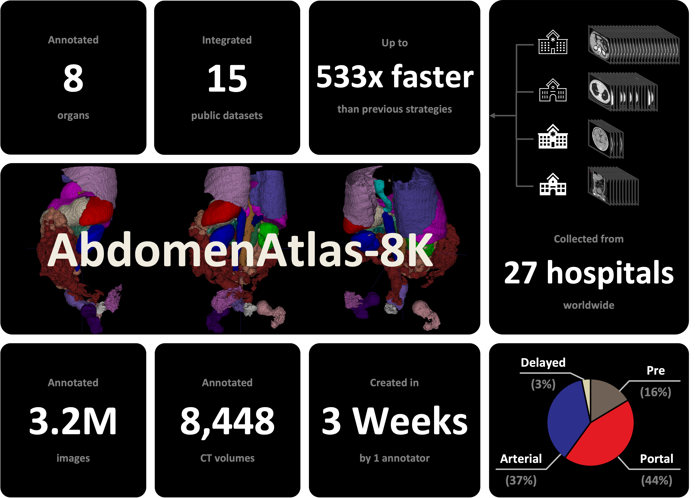

|
Chongyu Qu 2023.3 - present, currently, I'm a research assistant at CCVL (Computational Cognition, Vision, and Learning) Lab at Johns Hopkins University, under the advisement of Prof. Alan L.Yuille and Dr. Zongwei Zhou. 2020.8 - 2022.5, I was a master student at Department of Biomedical Engineering at Johns Hopkins University 2017.8 - 2020.5, I was an undergraduate student at The Ohio State University with a major in Biology I am looking for Ph.D. positions in computer vision and medical image analysis in Fall 2024. If you are interested in my background and have some available positions, please let me know. |

|
Research StatementMy research interests lie in the intersection of computer vision and medical image analysis. My current focus is on developing a robust medical foundation model with adaptability to various downstream applications. The ultimate objective is to advance innovations in computer-aided diagnosis. This involves assisting experts in acquiring a more comprehensive understanding of the human body, delivering precise diagnoses, and enabling early detection. Towards this goal, I have (1) created a composite dataset that unified medical datasets from at least 26 different hospitals worldwide. This dataset provides 8,448 CT volumes with per-voxel annotations of eight organs. I have also (2) proposed an active learning procedure that can generate an attention map to highlight the regions to be revised by radiologists, reducing the annotation time from 30.8 years to three weeks. This strategy can scale up annotations quickly for creating medical datasets or even natural imaging datasets. |
News
|
Publications |
|

|
Chongyu Qu, Tiezheng Zhang, Hualin Qiao, Jie Liu, Yucheng Tang Alan L. Yuille Zongwei Zhou* Conference on Neural Information Processing Systems (NeurIPS), 2023 [paper] [code] [bibtex] This paper proposes an active learning procedure to expedite the annotation process for organ segmentation and creates the largest multi-organ dataset (by far) with the spleen, liver, kidneys, stomach, gallbladder, pancreas, aorta, and IVC annotated in 8,448 CT volumes, equating to 3.2 million slices. |
|
Webpage template borrowed from Jon Barron |